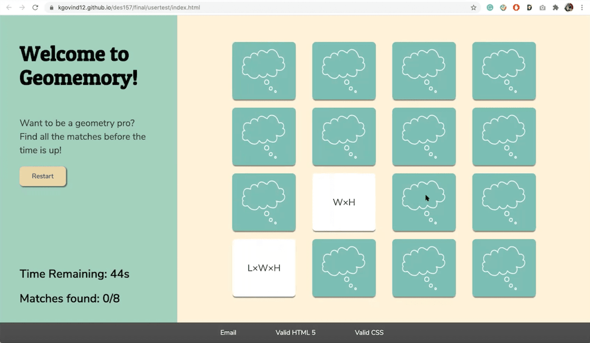
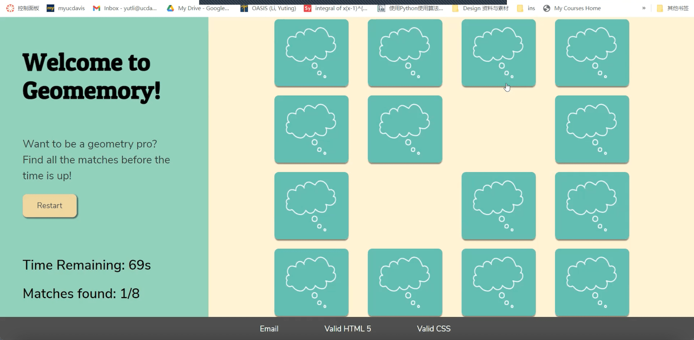
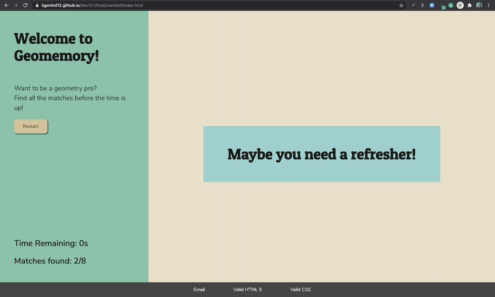

Observation 1: The card flip animation is successful
Throughout my testing, I observed that users responded well to the cards flipping as they were clicked. This animation engaged them and made the game more realistic, as though they were flipping an actual face-down card to reveal the other side. Additionally, the shadow appearing on the bottom of the card was effective as it preserved its position even as the card was flipped. Overall, the visual feedback made it easy for users to understand the actions that they performed on the page, adding to the positive game experience. Users also admitted that it made them more enthusiastic about interacting with the game.
Observation 2: Instructions are unclear
Through my testing, the first major pain point I observed was that the instructions for the memory game were slightly unclear. In a regular memory game, players are required to match cards that contain the exact same content on the front side. Following the norm, all of the users I tested with expected to find the same text on both cards, so it took them a little while to understand that the content of the matching cards were different. In my game, users are supposed to match one card with a mathematical concept and the other with a formula related to that concept. To eliminate the ambiguity, I realized that instructions about the kind of matches to find would be beneficial. Providing an example of a correct match would also help users know exactly what to expect.
Observation 3: The response after a match is found could be more engaging
When a match is found, the corresponding cards disappear from the window, indicating that they have been collected. The text on the bottom left also changes to show the total number of matches found. Although this is good feedback, it lacks the positive reinforcement that students often require when they attempt to learn a difficult concept. While testing, I found out that my users often waited for an additional response after finding a match. To add to the engagement, it would help to add a sound effect or an animation as the cards disappear. Other sound effects when the user wins the game or when the timer is up, could also provide valuable auditory feedback to keep users engaged.
Observation 4: It’s slightly difficult to keep track of the matches found and time remaining while playing the game
One of the users I tested with mentioned that they were so engrossed in the game that they did not look toward the bottom of the page much. Therefore, they found that they weren’t paying very close attention to the time remaining and number of matches found as they played the game. Only at the start and end of the game did they happen to notice the text at the bottom. One of the users mentioned that I could increase the size or color of this text so that their attention is drawn to it. To help users keep track of these variables while the game is in progress, I realized I could find a better placement for this text that isn’t too far from the user’s focus as they play the game. Maybe moving it to the top, right above the cards, would ensure that it is always in the user’s line of sight.
Observation 5: Users lose some time in reading instructions
Since the timer starts as soon as the page loads, users lose a few seconds as they read the instructions. This leaves them with less time to complete the game. When asking about ways to improve this aspect, I received two suggestions. One is to have an overlay introducing the game and the instructions before transitioning into the main screen when the user is ready. A second option is to keep a start button on the left column underneath the instructions, that allows the user to start the timer after they have acquainted themselves with the rules. With this option, the cards would have to be disabled until the timer is started, so that they cannot be opened beforehand.
Future Iterations:
Based on the feedback I received, I plan to make the following changes:
- Changing the placement of the text representing the game variables to better fit the user’s line of vision.
- Adding sounds to the game to enhance the engagement and provide auditory feedback.
- Adding more instructions along with examples about what the user is expected to match.
- Adding a start button in addition to the reset button that the user can click to start the timer when they are ready.